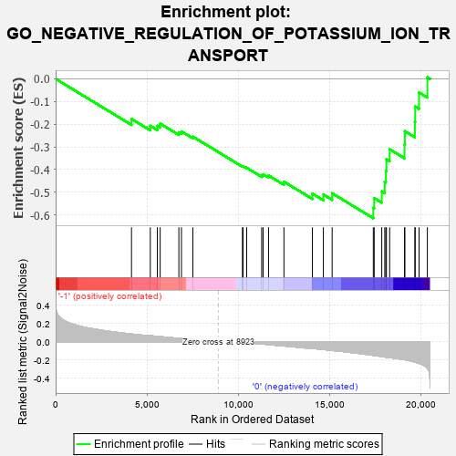
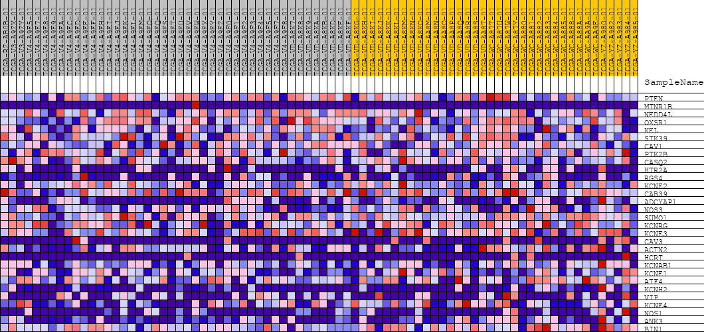
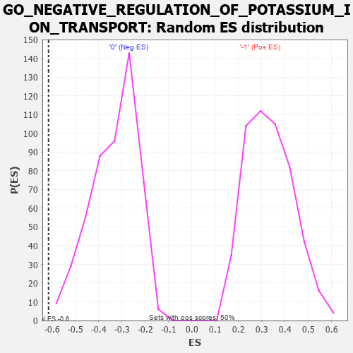

| | | Dataset | GSEAExpression.phenotype_uvm.cls#-1_versus_0 |
| Phenotype | phenotype_uvm.cls#-1_versus_0 |
| Upregulated in class | 0 |
| GeneSet | GO_NEGATIVE_REGULATION_OF_POTASSIUM_ION_TRANSPORT |
| Enrichment Score (ES) | -0.61454594 |
| Normalized Enrichment Score (NES) | -1.8565855 |
| Nominal p-value | 0.0 |
| FDR q-value | 1.0 |
| FWER p-Value | 0.705 |
Table: GSEA Results Summary

Fig 1: Enrichment plot: GO_NEGATIVE_REGULATION_OF_POTASSIUM_ION_TRANSPORT
Profile of the Running ES Score & Positions of GeneSet Members on the Rank Ordered List
| PROBE | DESCRIPTION
(from dataset) | GENE SYMBOL | GENE_TITLE | RANK IN GENE LIST | RANK METRIC SCORE | RUNNING ES | CORE ENRICHMENT | | 1 | PTEN | na | | | 4158 | 0.086 | -0.1766 | No |
| 2 | MTNR1B | na | | | 5189 | 0.065 | -0.2070 | No |
| 3 | NEDD4L | na | | | 5575 | 0.060 | -0.2073 | No |
| 4 | OXSR1 | na | | | 5730 | 0.057 | -0.1973 | No |
| 5 | KEL | na | | | 6754 | 0.038 | -0.2357 | No |
| 6 | STK39 | na | | | 6897 | 0.035 | -0.2318 | No |
| 7 | CAV1 | na | | | 7521 | 0.024 | -0.2547 | No |
| 8 | PTK2B | na | | | 10240 | -0.005 | -0.3857 | No |
| 9 | CASQ2 | na | | | 10273 | -0.006 | -0.3854 | No |
| 10 | HTR2A | na | | | 10470 | -0.009 | -0.3921 | No |
| 11 | RGS4 | na | | | 11293 | -0.024 | -0.4250 | No |
| 12 | KCNE2 | na | | | 11374 | -0.025 | -0.4212 | No |
| 13 | CAB39 | na | | | 11669 | -0.030 | -0.4262 | No |
| 14 | ADCYAP1 | na | | | 12513 | -0.045 | -0.4534 | No |
| 15 | NOS3 | na | | | 14073 | -0.075 | -0.5064 | No |
| 16 | SUMO1 | na | | | 14674 | -0.083 | -0.5101 | No |
| 17 | KCNRG | na | | | 15155 | -0.095 | -0.5045 | No |
| 18 | KCNE3 | na | | | 17411 | -0.148 | -0.5691 | Yes |
| 19 | CAV3 | na | | | 17460 | -0.149 | -0.5257 | Yes |
| 20 | ACTN2 | na | | | 17875 | -0.161 | -0.4965 | Yes |
| 21 | HCRT | na | | | 18040 | -0.166 | -0.4536 | Yes |
| 22 | KCNAB1 | na | | | 18100 | -0.167 | -0.4051 | Yes |
| 23 | KCNE1 | na | | | 18131 | -0.168 | -0.3548 | Yes |
| 24 | ATF4 | na | | | 18307 | -0.173 | -0.3103 | Yes |
| 25 | KCNH2 | na | | | 19124 | -0.195 | -0.2901 | Yes |
| 26 | VIP | na | | | 19141 | -0.196 | -0.2307 | Yes |
| 27 | KCNE4 | na | | | 19690 | -0.221 | -0.1895 | Yes |
| 28 | NOS1 | na | | | 19708 | -0.222 | -0.1221 | Yes |
| 29 | ANK3 | na | | | 19919 | -0.235 | -0.0601 | Yes |
| 30 | BIN1 | na | | | 20374 | -0.291 | 0.0070 | Yes |
Table: GSEA details [plain text format]

Fig 2: GO_NEGATIVE_REGULATION_OF_POTASSIUM_ION_TRANSPORT
Blue-Pink O' Gram in the Space of the Analyzed GeneSet

Fig 3: GO_NEGATIVE_REGULATION_OF_POTASSIUM_ION_TRANSPORT: Random ES distribution
Gene set null distribution of ES for GO_NEGATIVE_REGULATION_OF_POTASSIUM_ION_TRANSPORT